LongSpark: Efficient speculative decoding with a fixed-cost parallel drafter
Presenter: 何浩源
背景 动机 方法 实验 讨论 备份
自回归解码的瓶颈：访存带宽受限
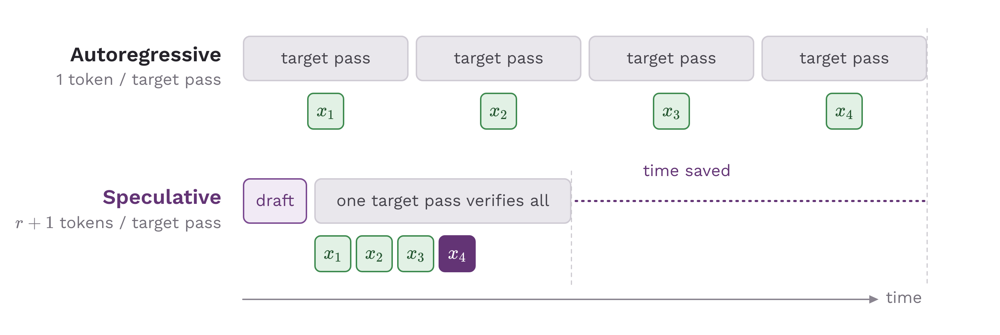
每次前向都要读取全部模型权重与 KV，却只生成 1 个 token。
一次前向同时验证多个候选位置，计算开销几乎不随候选数增加。
背景 动机 方法 实验 讨论 备份
投机解码的一轮：起草、验证与接受
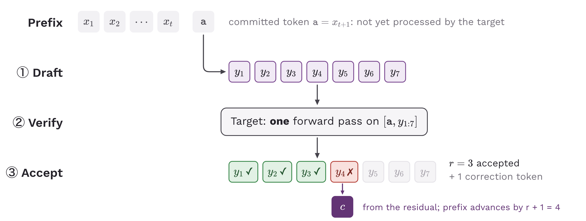
由 drafter 起草多个候选，target 一次前向并行验证：接受前 r 个并重采样第 r+1 个。
背景 动机 方法 实验 讨论 备份
无损验证：严格保持 target 输出分布
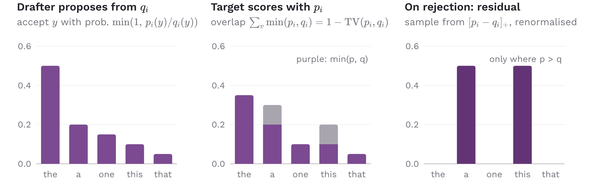
经拒绝采样与残差分布修正，输出严格服从 target 分布 p；q 的质量只决定接受率，不改变输出分布。
背景 动机 方法 实验 讨论 备份
加速的决定因素：接受长度与起草开销
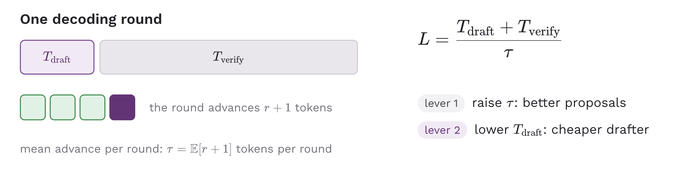
提升端到端速度有两条路径：提高平均接受长度 τ，或降低起草开销 Tdraft。
长上下文场景下，Tdraft 会随前缀增长而显著放大，成为不可忽视的瓶颈。
背景 动机 方法 实验 讨论 备份
三类 drafter：从逐个起草到块级并行
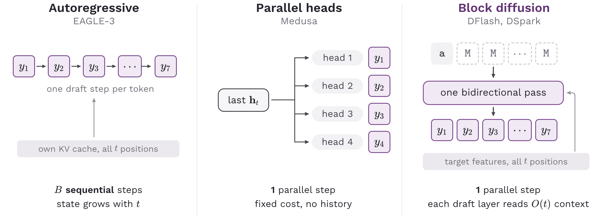
块扩散一次前向起草整块；DSpark 在其上引入顺序校正，但仍需读取全前缀特征。
背景 动机 方法 实验 讨论 备份
长上下文下，投机解码加速比明显下降
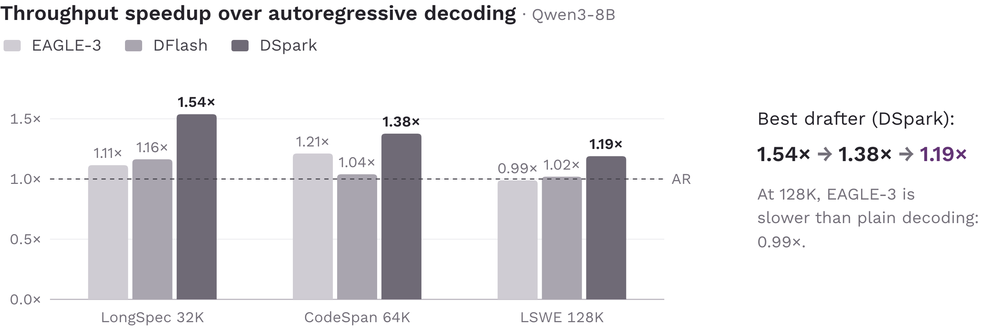
三组长上下文基准的长度与任务分布不同，但上下文增至 128K 时收益均明显收窄。
背景 动机 方法 实验 讨论 备份
原因分析：drafter 代价随前缀长度线性增长
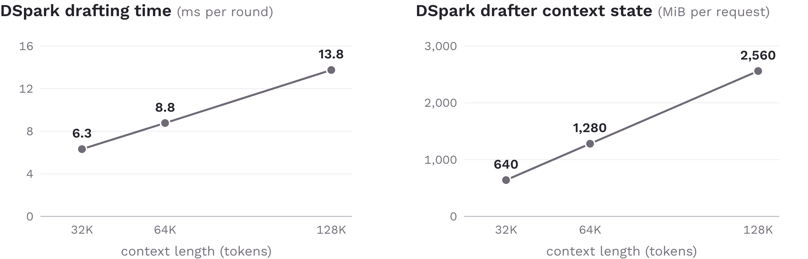
全前缀块 drafter 每层注意力为 O(B2+Bt)，起草耗时与缓存状态均随 t 线性增长。
背景 动机 方法 实验 讨论 备份
设计空间：全局视野与固定开销的权衡
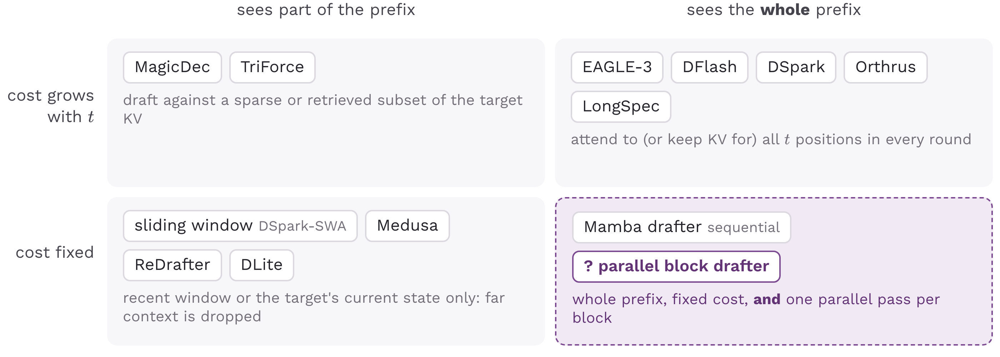
能否在保留全前缀信息的同时，将并行块 drafter 的每轮代价保持为 O(1)？
背景 动机 方法 实验 讨论 备份
核心观察：drafter 与 target 的角色并不对称
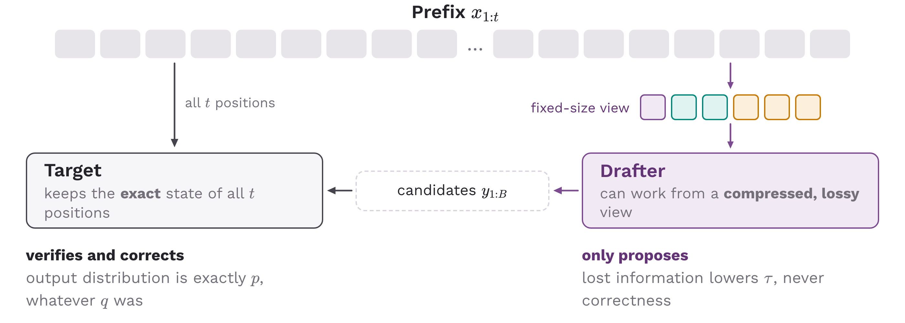
target 负责无损验证，必须保留完整精确的状态。
drafter 仅负责提议，压缩失真只会影响接受率，不改变输出分布。
背景 动机 方法 实验 讨论 备份
设计目标：与前缀长度无关的固定代价起草
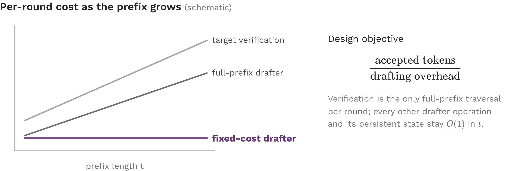
只要压缩视图足以支撑高质量提议，drafter 的每轮计算与存储开销便可与前缀长度 t 解耦。
背景 动机 方法 实验 讨论 备份
LongSpark 概览：每轮仅验证遍历全前缀
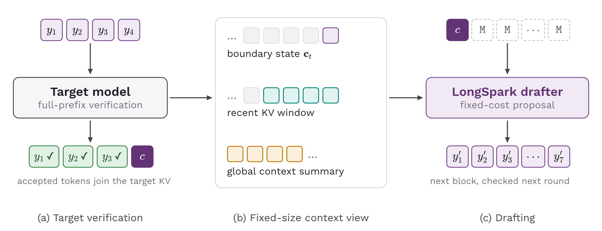
单轮中仅 target 验证遍历全前缀；drafter 只读固定大小视图，其余操作均为 O(1)。
背景 动机 方法 实验 讨论 备份
多尺度上下文接口：三种固定大小的视图
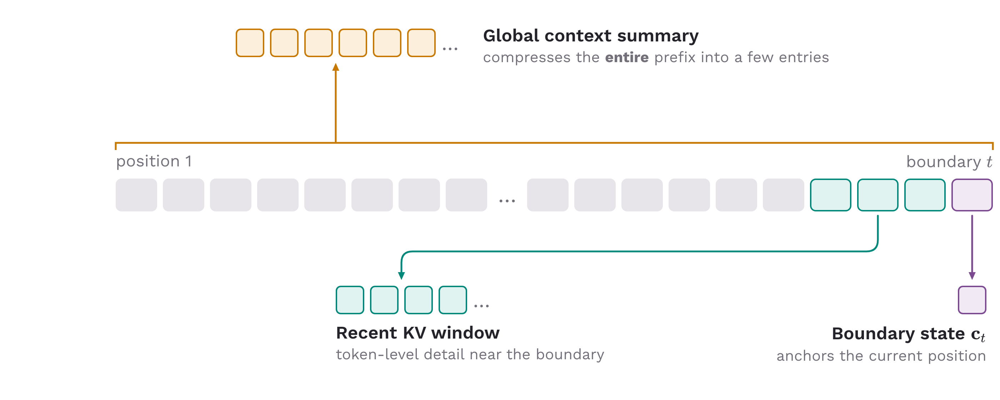
从 5 个均匀选取的 target 层（第 0、9、18、26、35 层）读取全局摘要、256 窗口与边界状态。
背景 动机 方法 实验 讨论 备份
全局上下文摘要：固定数量的交叉注意力读出
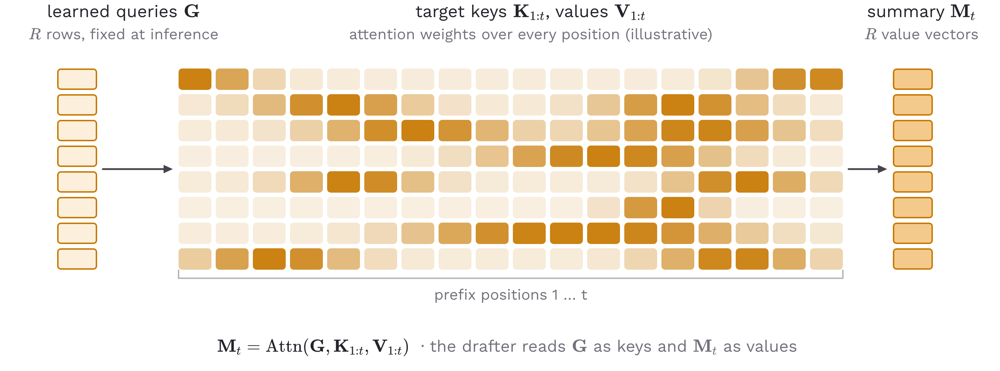
在每个选中层与注意力头设置 R=16 个可学习查询向量；训练完成后在推理阶段保持固定。
背景 动机 方法 实验 讨论 备份
查询固定是增量更新的前提
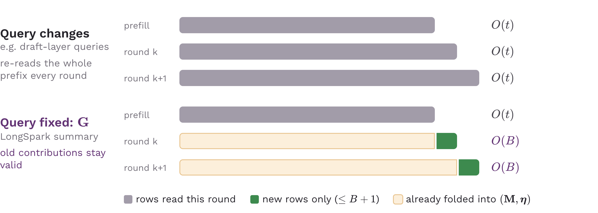
若查询每轮变化，历史注意力必须重算；查询固定后，历史贡献长期有效。
每轮只需将新确认的 ≤B+1 个位置增量并入摘要。
背景 动机 方法 实验 讨论 备份
增量维护：在线 softmax 精确合并
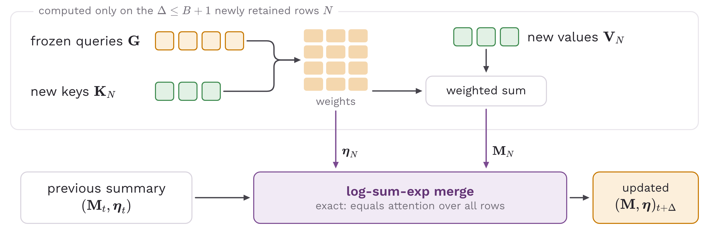
合并结果严格等价于对 A∪N 重算全量注意力；每个查询仅存一个值向量与对数归一化项。
背景 动机 方法 实验 讨论 备份
Drafter 结构：与 target 选中层一一配对
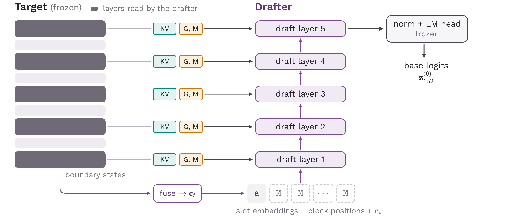
5 个 Qwen3 风格 block 与选中层配对；复用 target 的 embedding、norm 与 LM head。
背景 动机 方法 实验 讨论 备份
恒定注意力预算：每层固定读取 279 个键
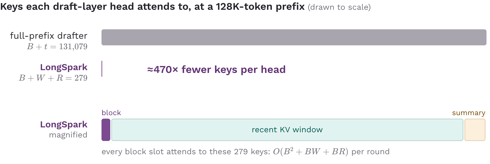
块内 7 个位置、256 个窗口键与 16 个摘要键共处一次 softmax 归一化，总计 279 个键。
背景 动机 方法 实验 讨论 备份
并行主干与轻量级顺序校正
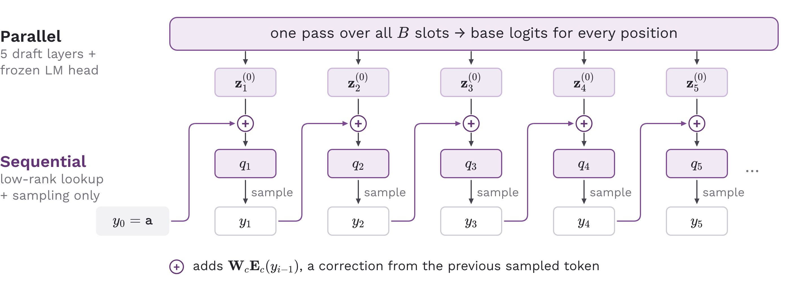
主干与词表投影一次并行计算全部基础 logits；仅低秩校正与采样按位置顺序执行。
背景 动机 方法 实验 讨论 备份
蒸馏训练：冻结 target，联合优化交叉熵与 ℓ1 距离
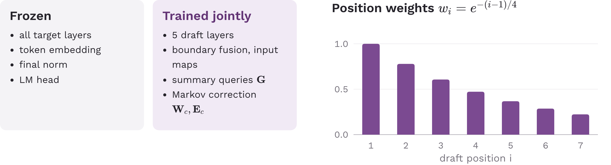
ℓ1 项直接对应单步接受率 1−TV(pi,qi)；指数衰减权重 wi 优先保证前序位置。
背景 动机 方法 实验 讨论 备份
单轮状态维护与复杂度
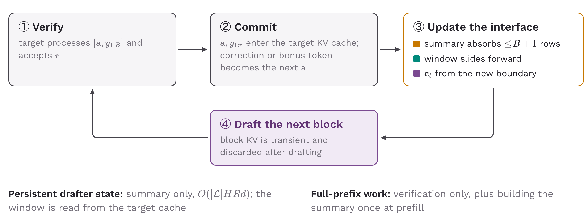
每轮按验证、提交、更新、起草循环：额外复杂度 O(B2+BW+BR)，低于全前缀的 O(B2+Bt)。
背景 动机 方法 实验 讨论 备份
实验设置
| 项目 | 设置 |
|---|---|
| Target | Qwen3-4B / 8B / 14B |
| 对比 | EAGLE-3、DFlash、DSpark、DSpark-SWA（256-token 滑窗） |
| 训练数据 | Open-PerfectBlend 约 142 万条提示，回复由各 target 重新生成 |
| 短任务 | 数学 GSM8K、MATH-500、AIME25；代码 MBPP、HumanEval、LCB；对话 MT-Bench、Alpaca |
| 长上下文 | LongSpec 32K、CodeSpan 64K、LongSWE-Bench 128K |
| 部署 | target 与 drafter 分离，drafter 独占 1 张 GPU；T=1，每轮 7 个草稿 token |
指标：相对自回归的吞吐加速比与平均接受长度 τ；长上下文另报 TPS 与 TPOT。
背景 动机 方法 实验 讨论 备份
主结果：在三个模型规模上均取得最高加速
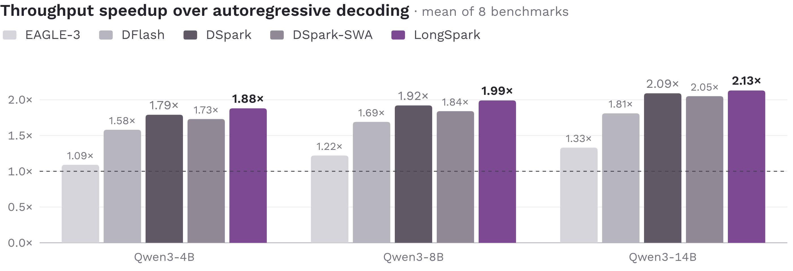
在 target TP1、并发 32 设置下，平均加速比随模型规模稳步提升：1.88× → 1.99× → 2.13×。
背景 动机 方法 实验 讨论 备份
接受长度略短，端到端吞吐反而更高
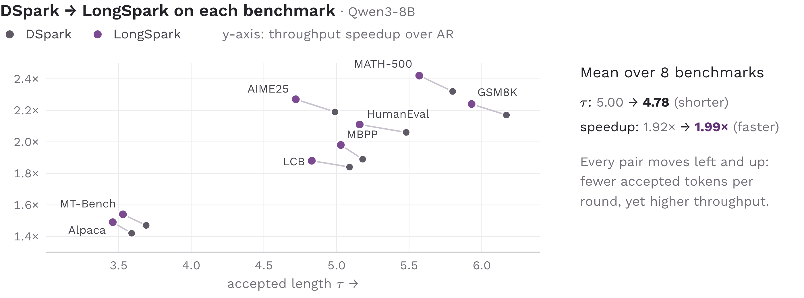
端到端加速取决于"接受的 token 数 / 起草与验证开销"的比值，而非单一的接受长度 τ。
背景 动机 方法 实验 讨论 备份
高并发下优势进一步扩大
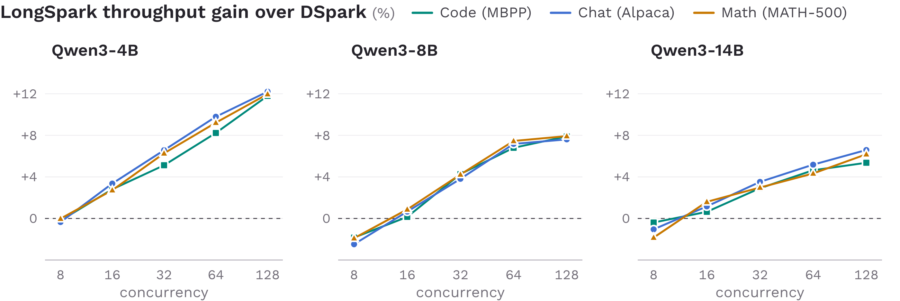
并发 8 时略逊于 DSpark；并发升至 32 与 128 后，起草开销被放大，LongSpark 反超并拉开差距。
背景 动机 方法 实验 讨论 备份
长上下文结果：更高吞吐与更低 TPOT
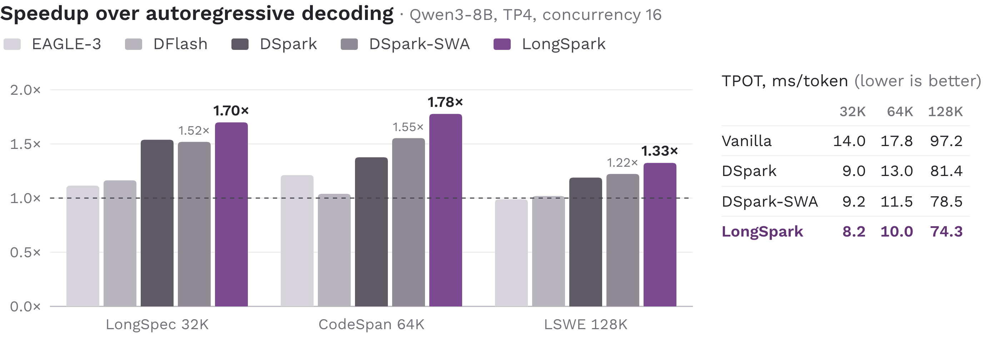
CodeSpan 64K 上，吞吐较 DSpark-SWA 高 14.4%，TPOT 低 13.0%；4B 与 14B 结论一致。
背景 动机 方法 实验 讨论 备份
起草耗时与显存状态与上下文长度解耦
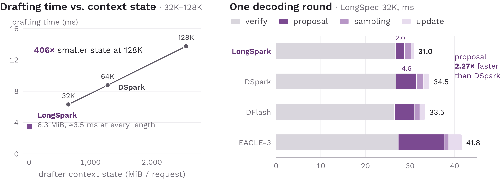
单轮耗时仍由验证主导，但在长序列生成中，固定起草开销的节省会在数千轮中累积。
背景 动机 方法 实验 讨论 备份
消融实验：三种上下文视图均不可或缺
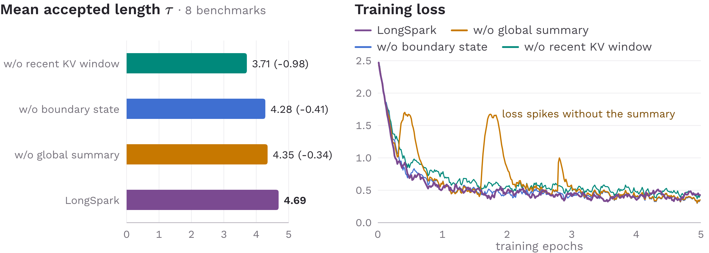
移除最近窗口导致平均接受长度 τ 下降最显著；移除全局摘要则使训练过程出现明显的损失尖峰。
背景 动机 方法 实验 讨论 备份
全局摘要有效补充了滑动窗口之外的上下文
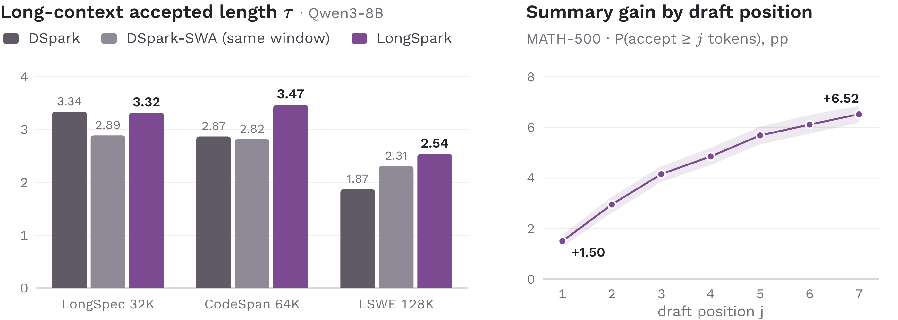
DSpark-SWA 与 LongSpark 共享相同的 256-token 窗口，唯一差异在于全局摘要。
草稿位置越靠后，摘要带来的接受率增益越显著：从第 1 位的 +1.50% 提升至第 7 位的 +6.52%。
背景 动机 方法 实验 讨论 备份
案例分析：全局摘要保留了窗口之外的关键约束
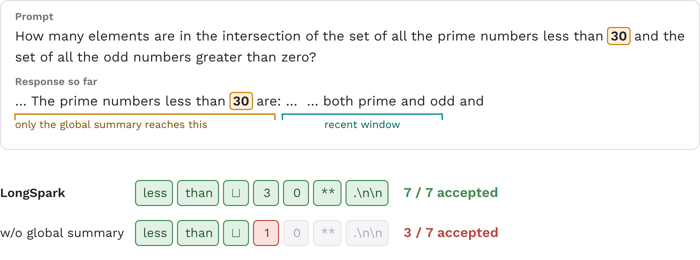
上界"30"已滑出 256-token 窗口：无摘要时第 4 个草稿即被拒绝。
加入全局摘要后，注意力读出聚焦于"30"，7 个草稿全部接受。
背景 动机 方法 实验 讨论 备份
总结
起草设计应优化"接受的 token / 起草开销"，而非单纯追求接受长度。
- 核心思路：验证保证无损，drafter 借固定多尺度视图将起草代价锁定为 O(1)。
- 核心收益：三规模吞吐均最高，长上下文与高并发下优势尤为显著。
背景 动机 方法 实验 讨论 备份
局限与讨论
- 低并发表现：并发 8 时平均加速比略逊于 DSpark（2.49× 对 2.55×）。
- 短任务接受长度：8B 短任务平均 τ 仍低于全注意力 DSpark（4.78 对 5.00）。
- 同置部署：在 target 与 drafter 共卡的短任务上与 DSpark 基本持平（8,957 对 9,044 TPS）。
- 基线差异：与 DLite 相比短任务 8 项中 6 项落后，两者训练数据与流程不同。
- 适用边界：当前摘要容量固定为 R=16，更大模型规模与更长上下文仍有待进一步验证。
背景 动机 方法 实验 讨论 备份
后续方向
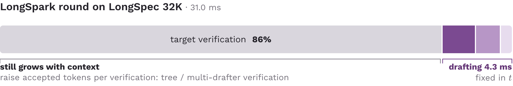
- 规模扩展：验证更大参数量的 target 模型与更长的上下文窗口。
- 接口与结构：探索更多固定代价的上下文接口与 drafter 架构。
- 联合验证策略：结合树形或多 drafter 验证，在保持 O(1) 起草的同时提高单轮接受长度。
- RL Rollout 应用：面向轨迹长、延迟预算紧的场景，充分发挥固定起草开销的累积优势。
背景 动机 方法 实验 讨论 备份
备份：更多对比
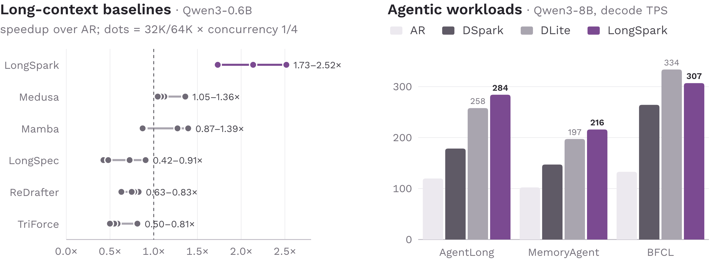
0.6B 对比只训练 2 个 epoch、T=0；DLite 的训练数据和流程与本文不同。
背景 动机 方法 实验 讨论 备份
备份：复杂度与系统开销
| 全前缀块 drafter | LongSpark | |
|---|---|---|
| 每层注意力 | O(B2+Bt) | O(B2+BW+BR) |
| 持久状态 | 随 t 增长 | O(∣L∣HRd)，与 t 无关 |
| 遍历全前缀 | 验证 + 每个 draft 层 | 仅验证；摘要在 prefill 时建一次 |
| 双向通信，32K | 1,512.9 MiB / 请求 | 238.5 MiB / 请求 |
| 双向通信，64K | 2,835.0 MiB / 请求 | 244.9 MiB / 请求 |
通信量为每请求 1,024 个输出 token 的总量；对比对象为 DSpark，Qwen3-8B。